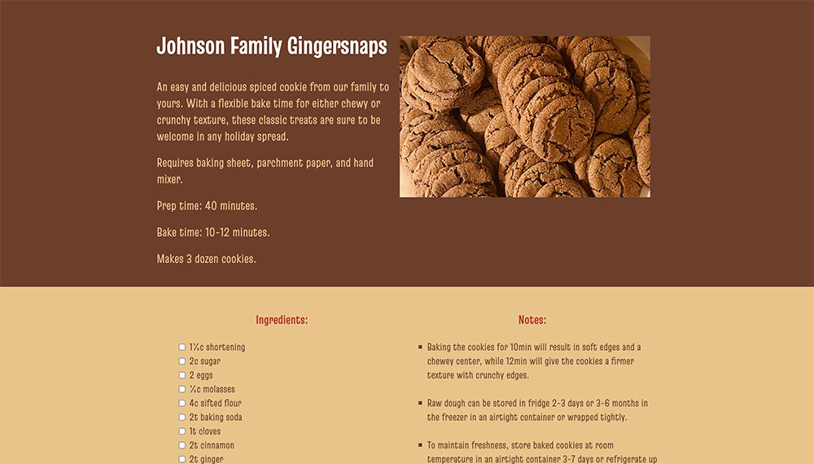
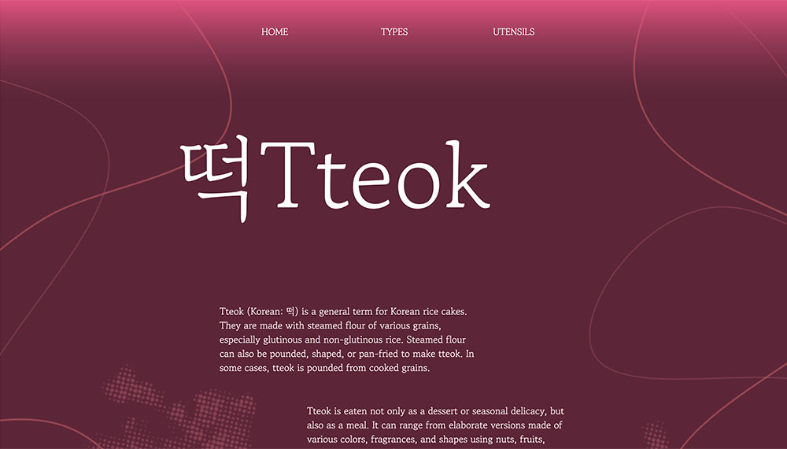
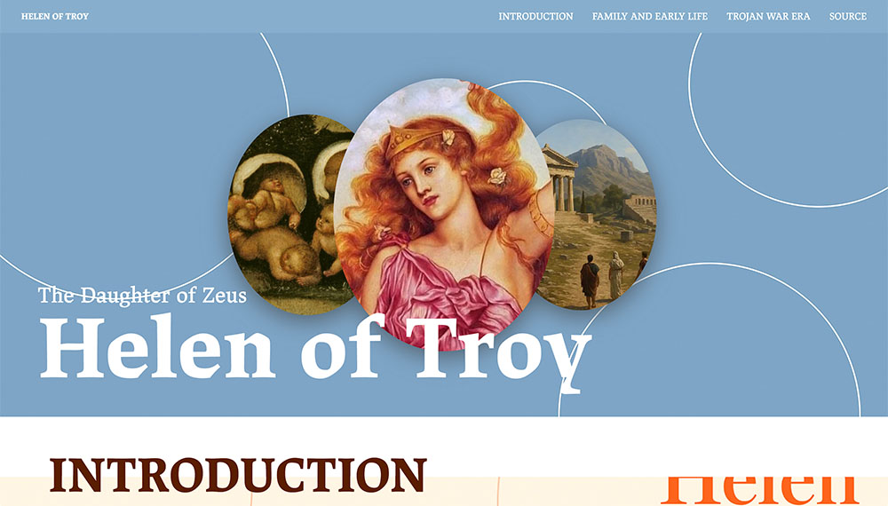

Manuel Lopez
Interaction Foundations Websites

Recipe Page
Designer: Manuel Lopez
Recipe: My Family!

Tteok Microsite
Creative Director: Sol Bae
Designer: Manuel Lopez

Helen Microsite
Creative Director: Manuel Lopez
Designer: Julia Cheon